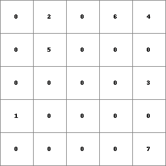
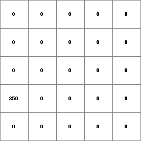
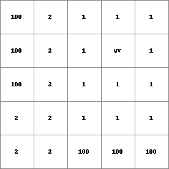
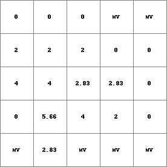
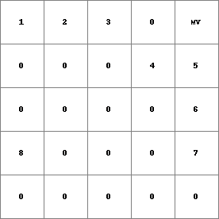

spreadldd¶
spreadldd
Total friction of the shortest accumulated friction downstream path over map with friction values from an source cell to cell under consideration
Result = spreadldd(ldd, points, initialfrictiondist, friction)
- initialfrictiondist
- spatial, non spatial scalar
- points
- spatial boolean, nominal, ordinal
- friction
- spatial, non spatial scalar
- ldd
- spatial ldd
- Result
- spatial scalar
Options¶
--unittrue or --unitcell
- --unittrue
- distance is measured in true distance (default)
- --unitcell
- distance is measured in number of cell lengths
Operation¶
The expression points identifies those cells from which the shortest friction-distance to every cell centre is calculated. The spreading for determination of these friction-distances starts at the centre of cells which have a non zero value on points. The initial friction distance (at the start of the spreading) is taken from the values at these point cells on initialfrictiondist. During spreading a path is followed over the consecutive neighbouring cells. While following this path the friction-distance increases. The increase of friction-distance per unit distance is specified by the cell values on friction. Using these values, increase when travelling from one cell to its neighbouring cell is calculated as follows: Let friction(sourcecell) and friction(destinationcell) be the friction values at the cell where is moved from and where is moved to, respectively. While moving from the source cell to the destination cell the increase of friction- distance is:
distance x {(friction(sourcecell)+friction(destinationcell)}/2
where distance is the distance between the sourcecell and the destination cell. This distance equals the cell length if the source cell and the destination cell are neighbours in horizontal or vertical directions; it equals sqrt(2) multiplied by the cell length if the cells are neighbours in diagonal directions.
During operation of the command, the spreading is executed from all non zero cells on points, over all possible paths. For determination of the friction-distance cell values on Result, for each cell the path from a non zero cell on points is chosen with the shortest friction-distance. So during the execution of the spreadldd operation, for each cell, the friction-distance for each possible path from the non zero cells on points to the cell under consideration is calculated and then the path with the shortest friction-distance is chosen. On Result each cell has a value which is the friction-distance covered when moving over this shortest path from a non zero cell on points.
Notes¶
The values on friction must be larger than zero.
Missing value cells on points, initialfrictiondist and friction are assigned a missing value on Result. Additionally, potential shortest paths that cross missing value cells are ignored.
If a cell has no source cell (i.e. a non zero cell value on points) on its upstream path or paths it is assigned a missing value.
Group¶
This operation belongs to the group of Neighbourhood operators; spread operators
See Also¶
Examples¶
- • pcrcalcbindingResult2 = Result2.map;Ldd2 = Ldd2.map;Points2 = Points2.map;Initial = Initial.map;FrictMat = FrictMat.map;initialreport Result2 = spreadldd(Ldd2, Points2,Initial,FrictMat);• pythonLdd2 = readmap(“Ldd2.map”)Points2 = readmap(“Points2.map”)Initial = readmap(“Initial.map”)FrictMat = readmap(“FrictMat.map”)Result2 = spreadldd(Ldd2, Points2,Initial,FrictMat)
Result2.map Ldd2.map Points2.map Initial.map FrictMat.map 

   - • pcrcalcbindingResult1 = Result1.map;Ldd2 = Ldd2.map;Points1 = Points1.map;initialreport Result1 = spreadldd(Ldd2, Points1,0,1);• pythonLdd2 = readmap(“Ldd2.map”)Points1 = readmap(“Points1.map”)Result1 = spreadldd(Ldd2, Points1,0,1)
Result1.map Ldd2.map Points1.map 
